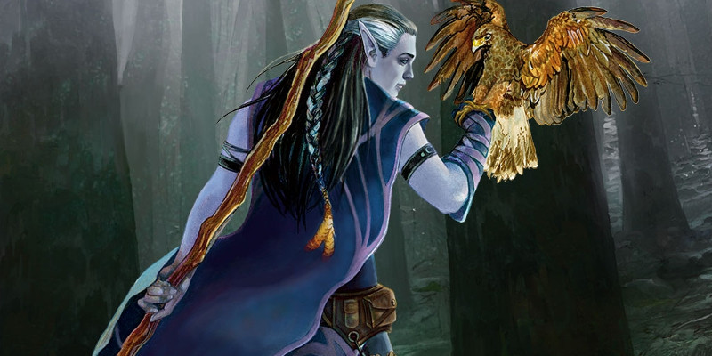

Cercles druidiques
Au niveau 2, un druide gagne la capacité Cercle druidique. Voici de nouvelles options de cercles :
- Cercle des rêves
- Cercle du berger
- Cercle du crépuscule
- Cercle des spores
- Cercle des feux rugissants
- Cercles des étoiles
Avec également une règle optionnelle pour la capacité Forme sauvage.
Cercle des rêves
Version officielle du Xanathar's Guide to Everything de cette sous-classe publiée initialement dans la rubrique Unearthed Arcana.
Les druides membres du cercle des rêves viennent de régions qui ont des liens étroits avec la Féerie. La tutelle des druides sur la nature leur permet de former une alliance naturelle avec les êtres féeriques d'alignement bon. Ces druides cherchent à remplir le monde de gaieté et de lumière. Leur magie referme les plaies et réconforte les cœurs tristes, et les royaumes qu'ils protègent sont des lieux éclatants et luxuriants où les rêves et la réalité se confondent et où les personnes épuisées peuvent trouver du repos.
Baume de la Cour d'été
Au niveau 2, vous êtes imprégné des bénédictions de la Cour d'été. Vous êtes rempli d'une énergie qui soulage les blessures. Vous avez une réserve d'énergie féerique représentée par un nombre de d6 égal à votre niveau de druide. Par une action bonus, vous pouvez choisir un allié que vous pouvez voir dans un rayon de 36 mètres et dépenser des d6 de cette réserve jusqu'à un nombre égal à la moitié de votre niveau de druide. Lancez les dés et additionnez-les. La cible regagne un nombre de points de vie égal à ce total. La cible gagne également 1 point de vie temporaire pour chaque dé dépensé. Vous regagnez les dés dépensés lorsque vous terminez un repos long.
Foyer de l'ombre et du clair de lune
Au niveau 6, votre demeure est là où vous établissez votre camp. Pendant un repos court ou long, vous pouvez invoquer le sombre pouvoir de la Cour du Crépuscule pour protéger votre camp contre les intrus. Au début du repos, vous créez une sphère invisible d'un rayon de 9 mètres à partir d'un point que vous touchez. Un abri total bloque la sphère. Au sein de cette zone, vous et vos alliés gagnez un bonus de +5 aux jets de Dextérité (Discrétion) et Sagesse (Perception), et toute lumière produite dans cette sphère par des flammes (feu de camp, torches et assimilées) n'est pas visible depuis l'extérieur de la sphère. La sphère disparaît lorsque le repos prend fin ou lorsque vous quittez la sphère.
Chemins secrets
À partir du niveau 10, vous pouvez utiliser les chemins magiques et cachés que certains êtres fées utilisent pour traverser l'espace en un clin d’œil. Par une action bonus à votre tour, vous pouvez vous téléporter jusqu'à 18 mètres dans un espace inoccupé que vous pouvez voir. Chaque mètre de cette téléportation vous coûte 1 mètre de votre mouvement. Vous pouvez aussi utiliser votre action pour téléporter une créature consentante que vous touchez jusqu'à 18 mètres dans un espace inoccupé que vous pouvez voir. Vous pouvez utiliser cette capacité un nombre de fois égal à votre modificateur de Sagesse (minimum une fois), et vous regagnez les utilisations dépensées lorsque vous terminez un repos long.
Arpenteur des rêves
Au niveau 14, la magie de la Féerie vous donne la possibilité de voyager mentalement ou physiquement à travers les contrées des rêves. Lorsque vous terminez un repos court, vous pouvez lancer l'un des sorts suivants sans dépenser un emplacement de sort et sans avoir besoin de composantes matérielles : songe (avec vous en tant que messager), scrutation ou cercle de téléportation.
Cette utilisation de cercle de téléportation est spéciale. Plutôt que d'ouvrir un portail vers un cercle de téléportation permanent, cela ouvre un portail vers le dernier endroit où vous avez terminé un repos long sur votre plan d'existence actuel. Si vous n’avez pas pris de repos long sur votre plan actuel, le sort échoue mais n’est pas perdu. Une fois que vous avez utilisé cette capacité, vous devez terminer un repos long avant de pouvoir l'utiliser à nouveau
Cercle du berger
Version officielle du Xanathar's Guide to Everything de cette sous-classe publiée initialement dans la rubrique Unearthed Arcana.
Les druides du cercle du berger communient avec les esprits de la nature, en particulier avec les esprits des bêtes et les êtres féeriques, et appellent ces esprits à l'aide. Ces druides reconnaissent que tous les êtres vivants jouent un rôle dans le monde naturel, mais ils se concentrent sur la protection des animaux et des créatures féeriques qui ont des difficultés pour se défendre. Les bergers, comme on les connait, voient ces créatures comme leurs devoirs. Ils les protègent des monstres qui les menacent, réprimandent les chasseurs qui tuent plus de proies que nécessaire et empêchent la civilisation d'empiéter sur les habitats d'animaux rares ou sur des sites sacrés pour les êtres féeriques. La plupart de ces druides sont heureux loin des villes et des villages, se contentant de passer leurs journées en compagnie des animaux et des créatures féeriques des forêts sauvages. Les membres de ce cercle deviennent des aventuriers pour s'opposer aux forces qui menacent leurs protégés ou pour rechercher des connaissances et des pouvoirs qui les aideront à mieux les protéger. Partout où vont ces druides, les esprits de la nature sont avec eux.
Langage des bois
Au niveau 2, vous obtenez la possibilité de converser avec les bêtes et de nombreuses créatures féeriques. Vous apprendrez à parler, lire et écrire le sylvestre. En outre, les bêtes peuvent comprendre vos paroles, et vous obtenez la capacité de déchiffrer leurs bruits et leurs mouvements. La plupart des bêtes manquent d'intelligence pour transmettre ou comprendre des concepts sophistiqués, mais une bête amicale pourrait relayer ce qu'elle a vu ou entendu dans un passé récent. Cette capacité ne vous octroie aucune amitié spéciale avec les bêtes, mais vous pouvez par exemple combiner cette capacité avec des cadeaux pour leur faire plaisir comme vous le feriez avec n'importe quel PNJ.
Esprit totem
À partir du niveau 2, vous obtenez la capacité d'appeler les esprits de la nature et de les utiliser pour influencer le monde qui vous entoure. Par une action bonus, vous pouvez invoquer par magie un esprit incorporel en un point que vous pouvez voir dans un rayon de 18 mètres autour de vous. L'esprit crée une aura dans un rayon de 9 mètres autour de ce point. Il ne compte ni comme une créature ni comme un objet, bien qu'il ait l'apparence spectrale de la créature qu'il représente. Par une action bonus, vous pouvez déplacer l'esprit de 18 mètres ou moins jusqu'à un point que vous pouvez voir. L'esprit persiste pendant 1 minute ou jusqu'à ce que vous soyez incapable d'agir. Une fois que vous avez utilisé cette capacité, vous devez terminer un repos court ou long avant de pouvoir l'utiliser à nouveau. L'effet de l'aura de l'esprit dépend du type d'esprit invoqué parmi les options présentées ci-dessous.
Esprit de l'ours. L'esprit de l'ours vous accorde ainsi qu'à vos alliés sa puissance et son endurance. Chaque créature de votre choix à l'intérieur de l'aura lorsque l'esprit apparaît gagne des points de vie temporaires égaux à 5 + votre niveau de druide. De plus, vous et vos alliés gagnez un avantage aux jets de Force et aux jets de sauvegarde de Force tant que vous êtes dans l'aura.
Esprit du faucon. L'esprit du faucon est un chasseur né qui vous aide, vous et vos alliés, avec sa vue perçante. Quand une créature effectue une attaque contre une cible située dans l'aura de l'esprit, vous pouvez utiliser votre réaction pour accorder un avantage à ce jet d'attaque. De plus, vous et vos alliés gagnez un avantage aux jets de Sagesse (Perception) tant que vous êtes dans l'aura.
Esprit de la licorne. L'esprit de la licorne prête sa protection à ceux qui lui sont proches. Vous et vos alliés gagnez un avantage à tous les jets de caractéristique servant à détecter des créatures au sein de l'aura. De plus, si vous lancez un sort qui restaure des points de vie en utilisant un emplacement de sort sur une cible, qu'elle soit située à l'intérieur ou à l'extérieur de l'aura, chaque créature de votre choix au sein de l'aura regagne un nombre de points de vie égal à votre niveau de druide.
Invocation puissante
À partir du niveau 6, vous gagnez la capacité d'invoquer des bêtes et des créatures féeriques puissantes. Chaque bête ou fée invoquée ou créée par l'un de vos sorts gagne les capacités suivantes :
- Son maximum de points de vie augmente de 2 par dé de vie
- Les dégâts infligés par ses armes naturelles sont considérés comme magiques et peuvent outrepasser les résistances et immunités aux attaques et dégâts non magiques.
Esprit gardien
À partir du niveau 10, votre Esprit totem protège les bêtes et les fées que vous appelez avec votre magie. Quand une bête ou une fée que vous avez invoquée ou créée avec un sort termine son tour dans votre aura d'Esprit totem, cette créature récupère un nombre de points de vie égal à la moitié de votre niveau de druide.
Convocations fidèles
À partir du niveau 14, les esprits de la nature que vous invoquez vous protègent lorsque vous êtes vulnérable. Si vous êtes réduit à 0 point de vie ou que vous êtes incapable d'agir contre votre volonté, vous gagnez immédiatement les bénéfices du sort invocation d'animaux comme s'il était lancé avec un emplacement de niveau 9. Cela invoque quatre créatures de votre choix de FP 2 ou inférieur. Les bêtes apparaissent dans un rayon de 6 mètres autour de vous. Si elles ne reçoivent aucun ordre de votre part, elles vous protègent des menaces et des attaques ennemies. Le sort, qui ne demande aucune concentration, dure 1 heure ou jusqu'à ce que vous y mettiez fin (aucune action n'est nécessaire). Une fois que vous avez utilisé cette capacité, vous devez terminer un repos long avant de pouvoir l'utiliser à nouveau
Cercle du crépuscule
Le cercle du crépuscule cherche à exterminer les créatures mortes-vivantes et à préserver le cycle naturel de la vie et de la mort qui règne sur le cosmos. Leur magie leur permet de manipuler la frontière entre la vie et la mort, en envoyant leurs ennemis trouver un dernier repos tout en préservant leurs alliés de ce sort. Ces druides cherchent des terres qui ont été contaminées par des morts-vivants. Ces lieux sont sinistres et inquiétant. Anciennes forêts vibrantes devenues sombres, lieux hantés dépourvus d'animaux et remplis de plantes qui meurent lentement mais surement. Le cercle du crépuscule va dans ces lieux pour bannir les morts-vivants et rétablir la vie.
Récolte de la faucheuse
À partir du niveau 2, vous apprenez à défaire et à récolter l'énergie vitale des autres créatures. Vous pouvez augmenter vos sorts pour drainer la force vitale des créatures. Vous avez une réserve d'énergie représentée par un nombre de d10 égal à votre niveau de druide. Lorsque vous lancez des dés de dégâts pour un sort, vous pouvez augmenter ceux-ci en dépensant des dés de votre réserve d'énergie. Vous pouvez dépenser jusqu'à un nombre de dés égal à la moitié de votre niveau de druide. Lancez les dés dépensés et ajoutez le résultat aux dégâts comme des dégâts nécrotiques. Si vous tuez une ou plusieurs créatures hostiles avec un sort augmenté de cette façon, vous ou un allié de votre choix que vous pouvez voir dans un rayon de 9 mètres autour de vous regagnez 2 points de vie par dé utilisé pour augmenter les dégâts du sort, ou 5 points de vie par dé si au moins une des créatures tuées était un mort-vivant. Vous récupérez les dés dépensés lorsque vous terminez un repos long.
Discours au-delà de la tombe
Au niveau 6, vous gagnez la capacité d'aller au-delà du voile de la mort à la recherche de connaissances. En utilisant cette capacité, vous pouvez lancer le sort communication avec les morts sans composantes matérielles, et vous comprenez ce que la cible de ce sort dit. Celle-ci peut comprendre vos questions, même si vous ne partagez pas la même langue ou si elle n'est pas assez intelligente pour parler. Une fois que vous avez utilisé cette capacité, vous devez terminer un repos court ou long avant de pouvoir l'utiliser à nouveau.
Gardien du seuil
Au niveau 10, vous gagnez la résistance aux dégâts nécrotiques et radiants. En outre, tant que vous n'êtes pas incapable d'agir, tout allié dans un rayon de 9 mètres autour de vous a un avantage aux jets de sauvegarde contre la mort.
Chemins des morts
Au niveau 14, votre maîtrise de la mort vous permet de parcourir les chemins utilisés par les fantômes et autres esprits. En utilisant cette capacité, vous pouvez lancer le sort forme éthérée. Une fois le sort terminé, vous ne pouvez pas le lancer de nouveau via cette capacité tant que vous n'avez pas terminé un repos court ou long.
Cercle des spores
Les druides du cercle des spores voient la beauté dans la décrépitude. Ils perçoivent dans les moisissures et autres mycoses la capacité de transformer la matière inerte en une vitalité abondante bien que quelque peu étrange. Ces druides croient que la vie et la mort font partie d’un grand cycle, l’un menant éternellement à l’autre. La mort n’est pas la fin de la vie, mais seulement un changement d’état. Les druides de ce cercle ont une relation complexe avec les morts-vivants, qu’ils considèrent comme des compagnons dans la vie comme dans la mort. Cependant, ils croient que ce cycle naturel est à son apogée lorsque chacun des segments qui le composent est en constant changement. Les morts-vivant qui ne désirent rien d’autre que de remplacer la vie par la mort ou qui tentent d’échapper au repos final transgressent le cycle et doivent être combattus.
Sorts de cercle
Votre lien symbiotique avec les champignons et votre capacité à exploiter le cycle de la vie et de la mort vous permet d’accéder à certains sorts. Au niveau 2, vous connaissez le sort mineur contact glacial. Aux niveaux 3, 5, 7 et 9 vous connaissez les sorts indiqués dans la table ci-dessous. Une fois ces sorts acquis, ils sont toujours préparés et ne comptent pas dans le nombre maximum de sorts que vous pouvez préparer chaque jour. Ils sont considérés comme des sorts de druide pour vous.
| Niveau de druide |
Sorts |
| 3 | préservation des morts, rayon affaiblissant |
| 5 | animation des morts, forme gazeuse |
| 7 | flétrissement, confusion |
| 9 | brume mortelle, contagion |
Halo de spores
À partir du niveau 2, vous pouvez lancer des spores toxiques sur d'autres créatures. Pour cela, vous utilisez votre réaction pour infliger 3 dégâts de poison à une créature que vous pouvez voir située à 3 mètres ou moins de vous. Les dégâts augmentent à 6 au niveau 6, 9 au niveau 10 et 12 au niveau 14.
Entité symbiotique
Au niveau 2, vous gagnez la capacité de canaliser la magie émanant des spores qui sommeillent en vous. Lorsque vous utilisez votre capacité Forme sauvage, vous pouvez choisir de réveiller ces spores à la place. Vous gagnez alors 3 points de vie temporaires par niveau de druide, les dégâts infligés par la capacité Halo de spores sont doublés, et vos attaque au corps à corps avec une arme infligent 1d6 de dégâts de poison supplémentaires à chaque cible touchée. Ces facultés durent pendant 10 minutes où jusqu'à ce que vous utilisiez votre Forme sauvage à nouveau.
Infestation fongique
Au niveau 6, vous spores gagnent la capacité d'infecter le corps d’un humanoïde et de l’animer. Si vous tuez un humanoïde grâce aux dégâts infligés par Halo de spores, la créature devient un zombie à la fin de votre tour. Elle possède 1 point de vie. En combat, son tour débute immédiatement après le vôtre. Elle obéit à vos ordres mentaux et peut seulement faire une attaque de corps à corps. Après une heure, elle s’effondre et meurt.
Dispersion de spores
Au niveau 10, vous gagnez la capacité de semer des spores mortelles. Par une action bonus, vous lancez à 9 mètres maximum des spores qui se mettent à tourbillonner, formant un cube de 3 mètres d'arête pendant une minute. Tant que le cube persiste, vous ne pouvez pas utiliser votre capacité Halo de spores, mais chaque créature qui débute son tour dans le cube subit les dégâts du Halo de spores. Le cube disparaît après une minute ou lorsque vous utilisez cette capacité une nouvelle fois.
Corps fongique
Au niveau 14, les spores fongiques présentes dans votre corps altèrent votre organisme. Vous ne pouvez plus être aveuglé, assourdi, effrayé ou empoissonné, et les coups critiques que vous subissez ne vous infligent pas de dégâts supplémentaires.
Cercle des feux rugissants
Les druides membres du cercle des feux rugissants comprennent la nécessité de la destruction, comme le fait que les incendies favorisent la croissance. Ces druides se lient à un esprit primitif aux tendances destructrices qui leur permet d'utiliser leur pouvoir pour créer des flammes contrôlées qui aident la faune et la flore à se reproduire et à grandir.
Sorts de cercle
Au niveau 2, vous nouez un lien mystique avec un esprit des feux rugissants, un être primitif de création et de destruction. Votre lien avec cet esprit vous donne accès à certains sorts. Au niveau 2, vous apprenez le sort mineur trait de feu. Lorsque vous atteignez certains niveaux dans cette classe, vous connaissez les sorts indiqués dans la table ci-dessous. Une fois ces sorts acquis, ils sont toujours préparés et ne comptent pas dans le nombre maximum de sorts que vous pouvez préparer chaque jour. Ils sont considérés comme des sorts de druide pour vous.
| Niveau de druide |
Sorts |
| 3 | localisation d'animaux ou de plantes, rayon ardent |
| 5 | boule de feu, croissance végétale |
| 7 | aura de vie, bouclier de feu |
| 9 | colonne de flamme, rappel à la vie |
Invocation d'un esprit des feux rugissants
À partir du niveau 2, vous pouvez invoquer l'esprit primitif lié à votre âme. Au prix d'une action, vous pouvez dépenser une utilisation de votre capacité Forme sauvage pour invoquer votre esprit des feux rugissants au lieu de prendre une forme de bête. L'esprit apparaît dans un espace inoccupé de votre choix que vous pouvez à 9 mètres ou moins de vous. Lorsqu'il apparaît, toute créature autre que vous située dans un rayon de 3 mètres autour de l'esprit doit réussir un jet de sauvegarde de Dextérité contre le DD de vos sorts ou subir 2d10 dégâts de feu. L'esprit des feux rugissants est amical avec vous et vos compagnons et obéit à vos ordres.
Vous déterminez l'apparence de l'esprit. Certains prennent la forme d'un humanoïde fait de branches noueuses recouvertes de flammes, d'autres ressemblent à des bêtes entourées de feu. En combat, l'esprit des feux rugissants joue à votre initiative, immédiatement après vous. La seule action qu'il effectue à son tour est Esquiver, à moins que vous ne preniez une action bonus à votre tour pour lui ordonner d'effectuer l'une des actions de son bloc de stat ou d'effectuer l'action Foncer, Se désengager, Aider ou Se cacher. L'esprit se manifeste pendant 1 heure, jusqu'à ce qu'il soit tombe à 0 point de vie ou jusqu'à ce que vous utilisiez à nouveau votre Forme sauvage.
Esprit des feux rugissants
Élémentaire de taille P, tout alignement chaotiquePoints de vie égaux au modificateur de Constitution de votre esprit sauvage + votre modificateur de Sagesse + cinq fois votre niveau dans cette classe
Vitesse 7,50 m, vol 9 m (stationnaire)
10 (+0)
14 (+2)
14 (+2)
13 (+1)
15 (+2)
11 (+0)
Compétences Nature +4
Immunités aux dégâts feu
Immunités aux états charmé, effrayé, agrippé, à terre, entravé
Sens vision dans le noir 18 m, Perception passive 12
Langues comprend les langues que vous parlez
Germe de flamme. Attaque à distance avec une arme : +4 au toucher, portée 9 m, une cible que vous pouvez voir. Touché : 1d6 + 2 dégâts de feu.
Téléportation fougueuse (recharge après un repos court ou long). L'esprit et toute créature consentante de votre choix à 1,50 m ou moins de lui se téléportent jusqu'à 9 m dans des espaces inoccupés que vous pouvez voir. Chaque créature à 3 m ou moins de l’espace laissé libre par l’esprit doit réussir sur un jet de sauvegarde de Dextérité contre le DD de vos sorts ou subir 1d6 + 2 dégâts de feu.
Lien amélioré
Au niveau 6, le lien avec votre esprit des feux rugissants améliore vos sorts de destruction et de restauration. Chaque fois que vous lancez un sort qui inflige des dégâts de feu ou restitue des points de vie alors que votre esprit des feux rugissants est invoqué, lancez un d8. Vous gagnez un bonus à un jet du sort égal au nombre obtenu. De plus, lorsque vous lancez un sort avec une portée autre que personnelle, le sort peut provenir de vous ou de votre esprit des feux rugissants.
Flammes de vie
À partir du niveau 10, vous pouvez transformer la mort en flammes de vitalité. Quand une créature de taille P ou supérieure que vous pouvez voir meurt à 9 m ou moins de vous ou de votre esprit des feux rugissants, vous pouvez utiliser votre réaction pour faire jaillir des flammes primitives du corps. Quand une créature que vous pouvez voir touche ces flammes, la créature regagne des points de vie ou subit des dégâts de feu (selon votre choix) égaux à 2d10 + votre modificateur de Sagesse. Les flammes disparaissent après qu'une créature les ait touchées ou après 1 minute. Vous pouvez utiliser cette capacité un nombre de fois égal à votre modificateur de Sagesse (minimum une fois). Vous récupérez toutes les utilisations lorsque vous terminez un repos long.
Endurance flamboyante
Au niveau 14, le lien avec votre esprit des feux rugissants est tellement fort que les coups fatals ne font que renforcer votre résistance. Si vous tombez à 0 point de vie et que vous ne mourez pas immédiatement, vous passez en fait à 1 point de vie, gagnez des points de vie temporaires égaux à cinq fois votre niveau de druide et toutes les créatures de votre choix dans un rayon de 9 mètres autour de vous et que vous pouvez voir subissent des dégâts de feu égaux à 2d10 + votre niveau de druide. Une fois que vous avez utilisé cette capacité, vous devez terminer un repos long avant de pouvoir l'utiliser de nouveau.
Cercles des étoiles
Ancienne lignée, le cercle des étoiles permet aux druides de puiser dans la puissance de la lumière des étoiles. Ces druides ont traqué des modèles célestes depuis des temps immémoriaux, découvrant des secrets cachés au milieu des constellations. En révélant et en comprenant ces secrets, le cercle des étoiles cherche à exploiter les pouvoirs du cosmos. De nombreux druides de ce cercle tiennent des registres détaillés des étoiles et de leurs effets sur le monde. Certains groupes documentent ces observations sur des sites mégalithiques comme autant de bibliothèques énigmatiques de savoir. Ces dépôts pourraient prendre la forme de cercles de pierre, de pyramides, de pétroglyphes, de temples souterrains ou de toute autre construction suffisamment solide pour protéger les connaissances sacrées du cercle même en cas de grand cataclysme.
Carte des étoiles
Capacité du cercle des étoiles de niveau 2
Vous avez créé une carte des étoiles dans le cadre de votre étude des cieux. La carte est un objet de taille TP qui peut servir de focaliseur de sorts pour vos sorts de druides. Vous pouvez choisir ou déterminer au hasard sur la table ci-dessous la forme de l'objet
| d6 | Formulaire de carte |
|---|---|
| 1 | Un parchemin de bois vivant qui s'aligne avec les corps célestes |
| 2 | Une tablette en pierre percée de petits trous |
| 3 | Une peau d'ours-hibou moucheté, ornée de marques en relief |
| 4 | Un ensemble de cartes reliées par une couverture en ébène |
| 5 | Un cristal qui projette des motifs étoilés lorsqu'il est placé dans la lumière |
| 6 | Des disques en verre trempé qui s'alignent pour représenter les constellations |
Si vous perdez votre carte, vous pouvez effectuer une cérémonie d'une heure pour en créer une autre magiquement. Cette cérémonie peut être effectuée lors d'un repos court ou long et détruit la carte précédente. Vous pouvez lancer les sorts augure et éclair traçant sans dépenser d'emplacement de sort et sans avoir à préparer le sort, à condition d'utiliser la carte des étoiles comme focaliseur de sorts. Vous pouvez lancer un sort depuis la carte de cette manière un nombre de fois égal à votre modificateur de Sagesse (minimum une fois), et vous récupérez toutes les utilisations dépensées lorsque vous terminez un repos long.
Forme étoilée
Capacité du cercle des étoiles de niveau 2
Vous gagnez la capacité d'exploiter le pouvoir des constellations pour modifier votre forme. Par une action, vous pouvez dépenser une utilisation de votre capacité Forme sauvage pour prendre une forme étoilée au lieu de vous transformer en bête. Sous votre forme étoilée, vous conservez vos statistiques de jeu, mais votre corps devient lumineux et étoilé ; vos articulations scintillent comme des étoiles et des lignes brillantes les relient comme sur une carte des étoiles. Cette forme diffuse une lumière vive sur dans rayon de 3 mètres et une lumière faible sur 3 mètres supplémentaires. La forme persiste 10 minutes ou jusqu'à ce que vous soyez incapable d'agir. Chaque fois que vous prenez votre forme étoilée, choisissez l'une des constellations suivantes, qui scintille sur votre corps et vous donne certains avantages tant que vous êtes sous cette forme :
RAPPEL DES RÈGLES : ARRONDI
Quand vous vous retrouvez avec une fraction dans le jeu, arrondissez à l'entier inférieur (7,8 donne 7 par exemple), sauf si une règle dit explicitement d'arrondir.
Calice. Une constellation représentant un gobelet vivifiant apparaît sur vous. Chaque fois que vous lancez un sort en utilisant un emplacement de sort qui restaure des points de vie à une créature, vous ou une autre créature dans un rayon de 9 mètres autour de vous, pouvez regagner des points de vie égaux à 1d8 + la moitié de votre niveau dans cette classe.
Archer. Une constellation représentant un archer apparaît sur vous. Vous gagnez une action bonus que vous pouvez utiliser pour effectuer une attaque avec un sort à distance, projetant une flèche lumineuse qui cible une créature que vous pouvez voir à 18 mètres ou moins de vous. Si vous touchez, l'attaque inflige des dégâts radiants égaux à 1d8 + votre modificateur de Sagesse.
Dragon. Une constellation représentant un dragon apparaît sur vous. Lorsque vous effectuez un jet d'Intelligence ou de Sagesse ou un jet de sauvegarde de Constitution pour maintenir la concentration sur un sort, vous pouvez traiter un jet de 9 ou moins sur le d20 comme un 10.
Présage cosmique
Capacité du cercle des étoiles de niveau 6
Vous apprenez à utiliser votre carte des étoiles pour deviner la volonté du cosmos. Chaque fois que vous terminez un repos long, vous pouvez consulter votre carte des étoiles pour y déceler des présages. Dans ce cas, lancez un d6. Vous gagnez l'un des présages possibles suivants selon que vous ayez obtenu un nombre pair ou impair sur le d6 :
Bonheur (pair). Chaque fois qu'une créature que vous pouvez voir à 9 mètres ou moins de vous effectue un jet d'attaque, un jet de sauvegarde ou un jet de caractéristique, vous pouvez utiliser votre réaction pour lancer un d6 et ajouter le nombre obtenu au total.
Malheur (impair). Chaque fois qu'une créature que vous pouvez voir à 9 mètres ou moins de vous effectue un jet d'attaque, un jet de sauvegarde ou un jet de caractéristique, vous pouvez utiliser votre réaction pour lancer un d6 et soustraire le nombre obtenu du total.
Vous pouvez utiliser cette réaction un nombre de fois égal à votre modificateur de Sagesse, et vous récupérez toutes les utilisations dépensées lorsque vous terminez un repos long.
Plein d'étoiles
Capacité du cercle des étoiles de niveau 10
RAPPEL DES RÈGLES : RÉSISTANCE
Si vous avez la résistance à un type de dégâts, ces dégâts sont divisés par deux contre vous. Et voici l'ordre dans lequel on applique des modificateurs à un type de dommage :
1. Toute immunité aux dégâts
2. Toute addition ou soustraction aux dégâts
3. Une résistance aux dégâts
4. Une vulnérabilité aux dégâts
Si votre capacité de Forme étoilée est active, vous devenez partiellement incorporel, ce qui vous donne une résistance aux dégâts contondants, perforants et tranchants.
Éclat des étoiles
Capacité du cercle des étoiles de niveau 14
Votre connexion au cosmos vous permet d'invoquer la lumière brillante des étoiles. Par une action, vous invoquez un éclat de lumière dans une sphère de 9 mètres de rayon centrée sur un point que vous pouvez voir à 36 mètres ou moins de vous. Vous pouvez immédiatement téléporter toute créature consentante située dans la sphère vers un espace inoccupé à 9 mètres ou moins de celle-ci. Les créatures qui restent dans la sphère doivent réussir un jet de sauvegarde de Constitution contre le DD de sauvegarde de vos sorts ou subir 4d10 dégâts radiants et être aveuglées jusqu'à la fin de votre prochain tour. Une fois que vous avez utilisé cette action, vous ne pouvez plus l'utiliser avant d'avoir terminé un repos long ou jusqu'à ce que vous ne dépensiez un emplacement de sort de niveau 5 ou supérieur pour l'utiliser à nouveau.
Règle optionnelle : Forme sauvage
La capacité Forme sauvage dans le Manuel des Joueurs vous permet de vous transformer en un animal que vous avez déjà vu. Cette règle donne une énorme flexibilité en vous permettant un grand éventail d'options, tout en supposant que vous vous conformez aux limitations de la table du livre. La règle optionnelle présentée ici est de fait conçue pour les joueurs et les MD qui voudraient échanger un peu de cette flexibilité contre plus de facilité d'utilisation, en proposant clairement une méthode pour apprendre de nouvelles formes de bêtes.
Formes de bêtes connues
Quand vous gagnez la capacité Forme sauvage au niveau 2, vous êtes familier avec trois bêtes de votre choix et pouvez prendre leur forme. Pour choisir ces trois formes, vous devez d'abord déterminer si votre druide a grandi dans une région au climat tempéré ou tropical, à accorder avec votre MD. Ensuite, reportez-vous à la table des Formes de bêtes communes qui correspond à la région choisie. Cette table indique les animaux que vous pouvez choisir en fonction de votre niveau de druide. Ce sont des animaux que le druide est susceptible d'avoir vus quand il était novice, qu'il connait le mieux suite à des recherches mystiques, ou avec lesquels il a une affinité particulière. Chaque fois que vous gagnez un niveau de druide par la suite, vous pouvez choisir une autre forme de bête sur la même table que vous avez utilisée au niveau 2.
| Niveau de druide |
Animaux |
| 2 | Araignée, belette, blaireau, cerf, chacal, chat, cheval de selle, cheval de trait, chèvre, élan, lézard, loup, molosse, mule, panthère, poney, rat, sanglier, scorpion |
| 4 | Cheval de guerre*, crabe, grenouille, hippocampe, ours noir*, pieuvre, requin de récif, serpent venimeux |
| 8 | Aigle, chauve-souris, chouette, corbeau, faucon, ours brun*, vautour |
* Un membre du cercle de la lune peut choisir cet animal au niveau 2.
| Niveau de druide |
Animaux |
| 2 | Araignée, babouin, belette, blaireau, chacal, chameau, chat, cerf, cheval de selle, cheval de trait, chèvre, hyène, lézard, mule, panthère, poney, rat, sanglier, scorpion |
| 4 | Cheval de guerre*, crabe, crocodile, grenouille, hippocampe, pieuvre, requin de récif, serpent constricteur, serpent venimeux, singe* |
| 8 | Aigle, chauve-souris, chouette, corbeau, faucon, lion*, tigre*, vautour |
* Un membre du cercle de la lune peut choisir cet animal au niveau 2.
Forme de bêtes au début
Pour commencer à utiliser rapidement Forme sauvage au niveau 2, choisissez un des packs de départ suivants, chacun d'eux proposant des options pour le combat, l'escalade, la furtivité, et servant de monture.
Tempéré : chat, élan, loup
Tropical : panthère, cheval de selle, araignée
Tempéré (Cercle de la lune) : ours brun, chat, cheval de guerre
Tropical (Cercle de la lune) : singe, tigre, cheval de guerre
Gagner des formes de bêtes supplémentaires
En plus des formes de bêtes que vous gagnez gratuitement lorsque vous montez de niveau, vous pouvez acquérir de nouvelles formes lors de vos aventures. Avez-vous vu un dinosaure, un tigre à dents de sabre, un aigle géant ou une autre bête exotique dans laquelle vous voulez vous transformer ? Cette règle présente une méthode pour pouvoir le faire. Cela nécessite que vous respectiez les limitations de la capacité Forme sauvage du Manuel des Joueurs. Lorsque vous voyez une bête dont vous voulez apprendre la forme, vous avez deux options :
Observation. Vous apprenez la forme de l'animal après avoir observé son comportement pendant au moins 1 heure et avoir réussi un jet d'Intelligence (Nature) avec un DD égal à 10 + le facteur de puissance de l'animal. Durant cette période d'observation, votre point de vue (qu'il soit physique ou magique) doit être situé à 45 mètres ou moins de l'animal. Si vous avez auparavant passé au moins 1 heure à lire un travail savant sur la créature, vous avez un avantage au jet.
Interaction. Vous apprenez la forme de l'animal après avoir interagit pacifiquement avec lui pendant 10 minutes et avoir réussi un jet de Sagesse (Dressage) avec un DD égal à 10 + le facteur de puissance de l'animal. Durant cette période d'interaction, vous devez être situé à 4,50 mètres ou moins de l'animal. Si vous passez au moins 1 minute à caresser la créature, vous avez un avantage au jet.
Ces deux options peuvent être assistées par la magie. Par exemple, la magie de divination peut être utilisée pour observer sans risque un animal dangereux, et un sort comme amitié avec les animaux peut jeter les bases d'une interaction pacifique.

Écrit par Mike Mearls et Jeremy Crawford, traduit par kevetoile, Ellef13, blueace et Zoran999